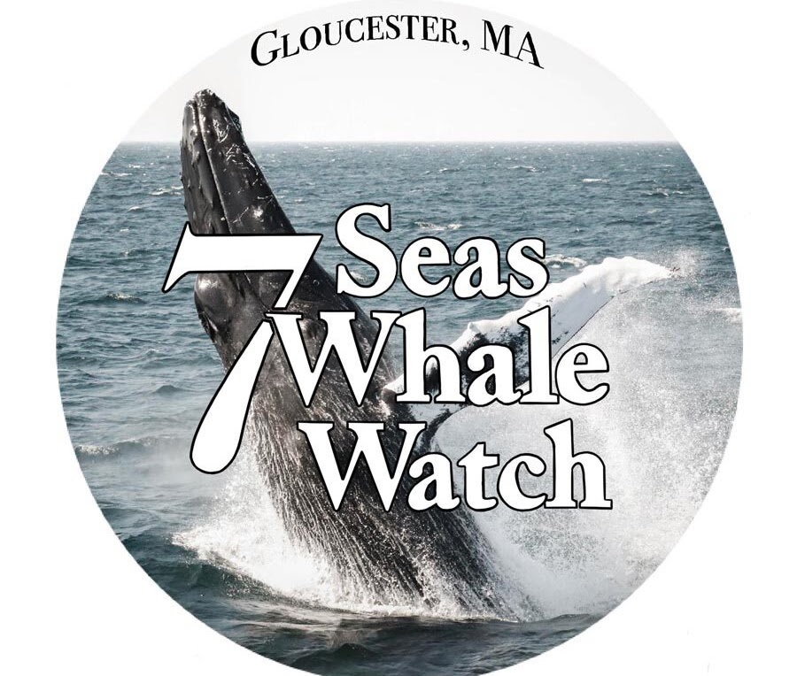
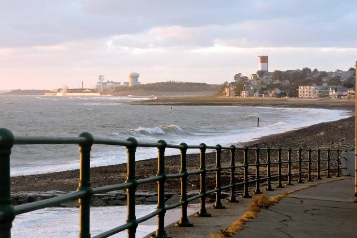
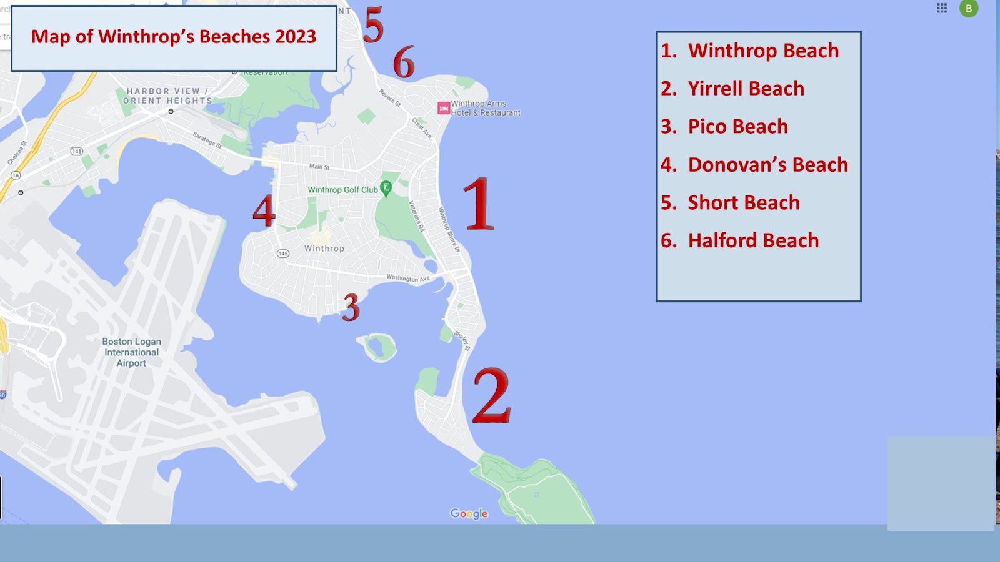
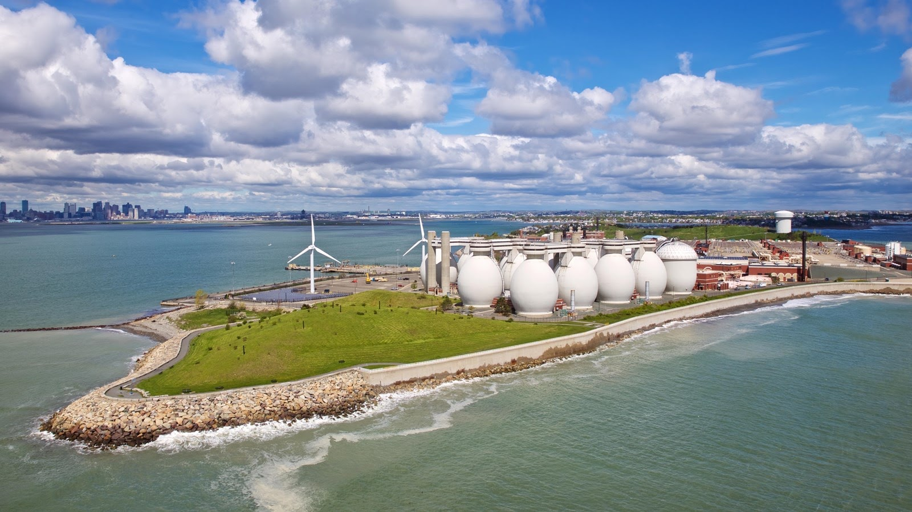
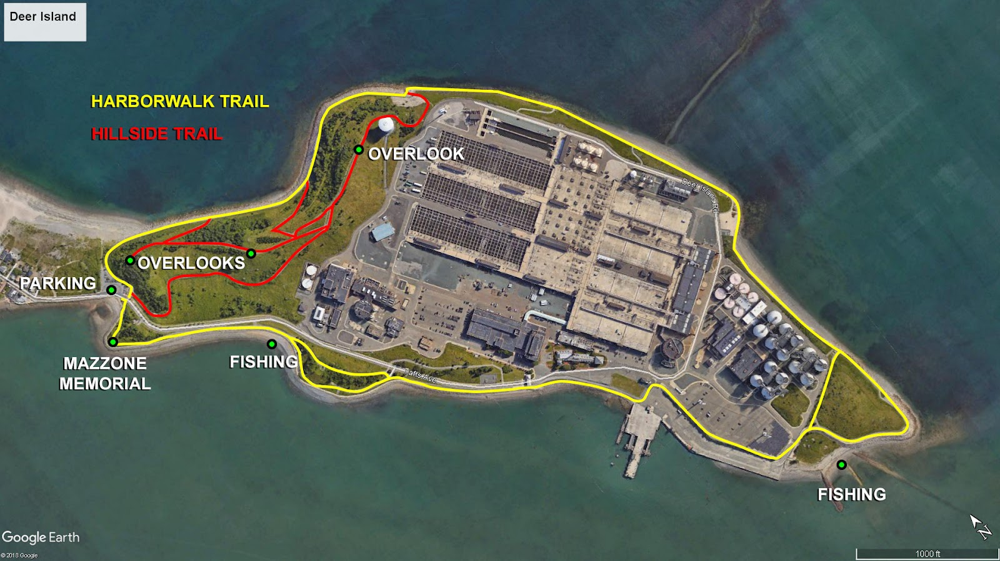
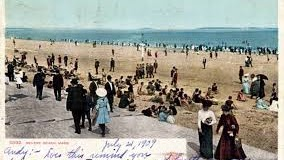
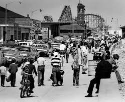
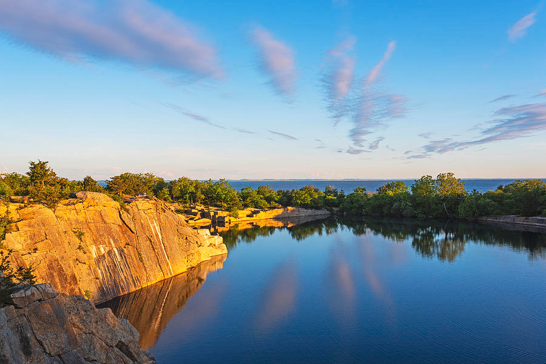
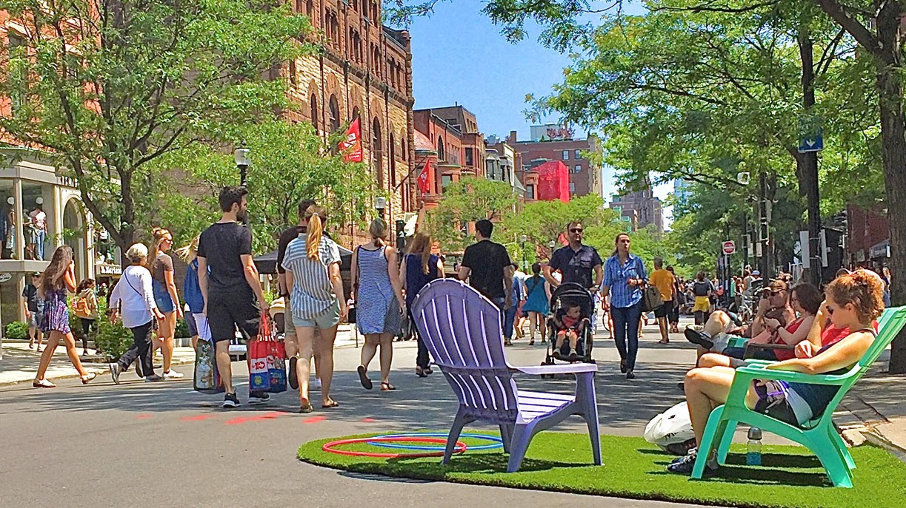
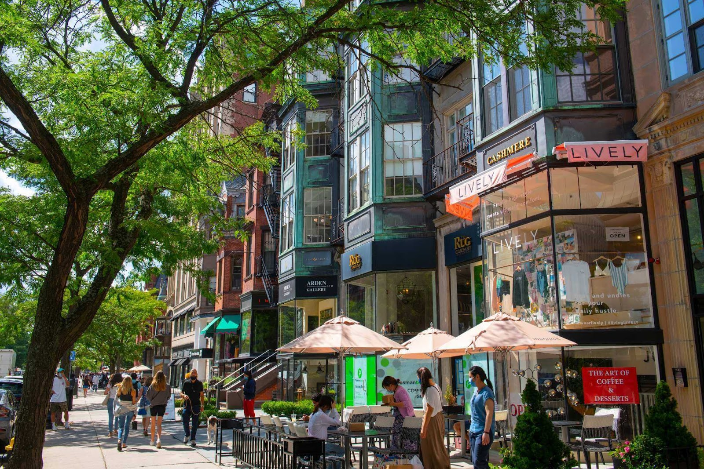

Whale watching
We recommend 7 Seas Whale Watch in Gloucester, MA. The waters off Cape Ann are summer feeding grounds for whales, and the guides really know their stuff.
Things to do
From the beach at the end of the street to day trips up the North Shore.
Right here
There are six beaches in Winthrop, including Highland Beach and Winthrop Beach. A public walkway runs along the shore, so you can pick up the water almost anywhere.

Free yoga on the sand. In the summer there's a free yoga class on Sundays at 9am on Winthrop Beach — at the Winthrop Shore Drive and Cutler entrance, near Cafe Valenciano.

Our top pick
If you only do one thing, do this. A 2.6-mile loop with views of the Boston skyline, the working harbor, and planes coming in low over the water on their approach to Logan. It's a perspective you won't get anywhere else — city and ocean in the same frame.


Just up the coast
Revere Beach was established in 1896 as the nation's first public beach. In its heyday it was lined with amusement parks and the famous Cyclone rollercoaster. It's now a National Historic Landmark, and every summer it hosts the spectacular annual International Sand Sculpting Festival.


Day trips
All of these are comfortable day trips from Winthrop.

We recommend 7 Seas Whale Watch in Gloucester, MA. The waters off Cape Ann are summer feeding grounds for whales, and the guides really know their stuff.
The Salem Witch Museum, the House of the Seven Gables, and the Peabody Essex Museum. If you're here in October, the Halloween festivities are something else.

Hammond Castle, Eastern Point Lighthouse, and Halibut Point State Park — a granite quarry right on the edge of the Atlantic.
In the city
On select Sundays, Boston closes Newbury Street to cars and the whole thing becomes a pedestrian promenade — shopping, dining spilling onto the pavement, and live music.


Hours. The street is car-free from 10am to 6pm, closed to traffic between Berkeley Street and Massachusetts Avenue. Take the Blue Line in and change at Government Center — see Commute.